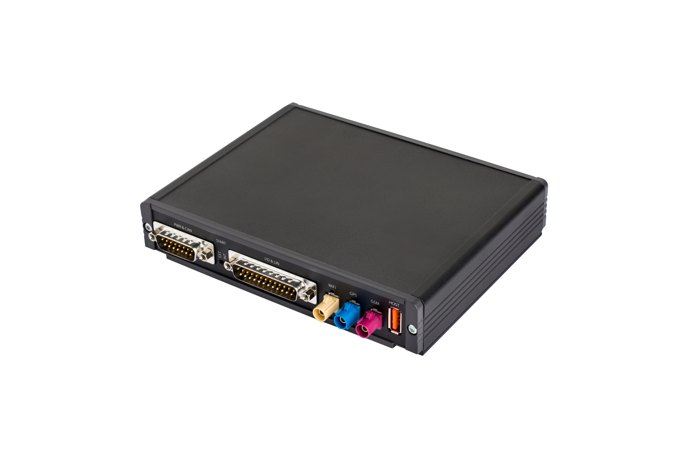

MX-4
2.0
Introduction
Getting started
Yocto/OE-core
Build from sources
MX-4’s hardware interfaces
Setup cross compile project with Eclipse
MX-4
Docs
»
Welcome to MX-4’s documentation!
View page source
Welcome to MX-4’s documentation!
¶

Introduction
Board Support Package
Getting started
Access the device
Hello World
Firmware update
Yocto/OE-core
Build from sources
Linux kernel
U-boot
Generate update image
MX-4’s hardware interfaces
Serial ports
Controller Area Network (CAN)
J1708
Local Interconnect Network (LIN)
Cellular Modem (PLS8-E)
WiFi
Digital I/O
Analog I/O
LED
Accelerometer
Setup cross compile project with Eclipse
Install Eclipse on Ubuntu 16.4
Build custom software development kit (sdk)
Setup hello_word application
Setup machine debugger